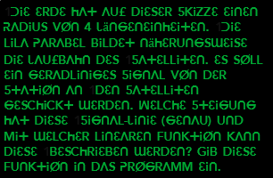

Damit man sich mit dem Satelliten
verbinden kann, muss die Satellitenschüssel
dieser Station richtig ausgerichtet werden.
Hierzu findest du eine Skizze
in den Unterlagen.
verbinden kann, muss die Satellitenschüssel
dieser Station richtig ausgerichtet werden.
Hierzu findest du eine Skizze
in den Unterlagen.
